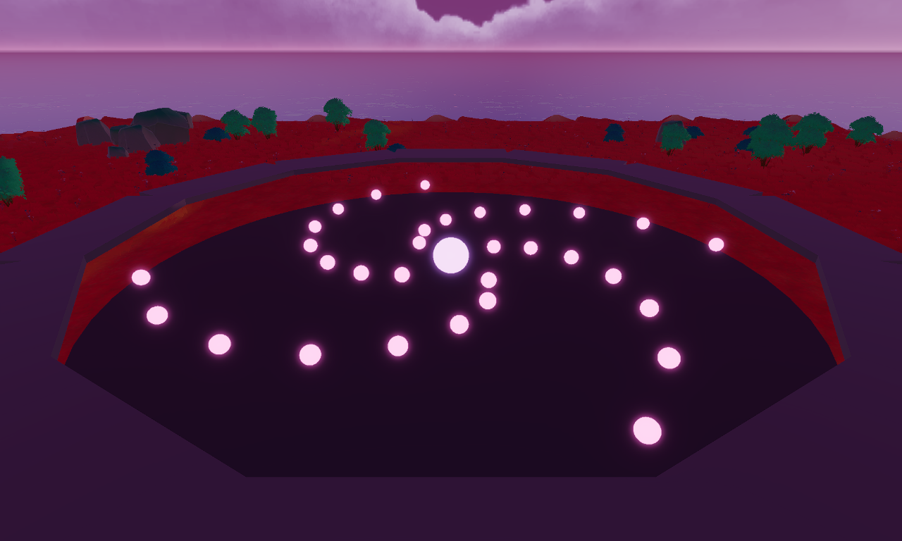

| Experience name | Yokai Danmaku |
| Studio / team | Pravus (solo) |
| Date | 2026-08-19 |
| Contact | TBD: Discord handle + pravus@decentraland.org |
| One-line concept | A shared bullet-hell arena in haunted neo-Tokyo: every avatar survives the same yokai's pattern together, and timed deflects are the only way to banish it. |
| Team & hours/week | Solo (Pravus), ~20 h/week |
| Current status | Playable core-loop greybox in SDK7 (desktop Explorer) — the H1/H2 experiment builds in this repo: aimed deflect at 92% intended-hit rate, 150 projectiles at 112 fps, anti-camping machine-verified. TBD: public link before submission |
| Live at end of Week 6 | Players drop into a persistent arena to banish escalating yokai together — with a weekly haunting board, a filling scrapbook, and a Friday Great Haunting. |
| Requested round | v1 |
It's like NieR: Automata's bullet hell, but the arena is shared — you and every other avatar in the plaza survive the same pattern together.
You spawn on a neon-lit walkway ringing a sunken arena. Below, glowing orbs bloom outward in slow spirals, and a handful of avatars weave between them. A pulsing ring on the floor marks the drop-in point. HYPOTHESIS → H1-04
You drop in as a new wave starts — wide, slow arcs. You sidestep the first one; a low chime marks the near miss. Then an orb flashes blue as it closes on you — you press, and it ricochets back through the pattern, punching a hole the avatar beside you dives through.
Wave by wave the pattern tightens, and every deflect — yours and everyone else's — chips the yokai's glowing bar above the pit. Three waves in, the bar shatters and the yokai is banished; the arena rim lights up with the next round's name and a preview of its pattern — visibly denser.
The last thing you see before leaving: the rim board catching your name — this week's haunting board, your deepest round sitting on it as a mark, the countdown to Sunday's reset ticking beside it. It will not survive tonight's crowd unless you come back to push it deeper.
Stage 2 — loop table resolved 2026-08-14. All three loop-structure claims are closed: H2-01 failed, H2-03 validated in its place (the goal-structure break is closed), and H2-02's solo floor survived the owner sitting (both 2026-08-17) — its crowd half waits for v1 testers.
| # | Step (verb) | What the player does | Why do it again? |
|---|---|---|---|
| 1 | READ | Watch the incoming bullet pattern and find the gap | Every wave draws a new pattern |
| 2 | WEAVE | Move your avatar through the gap | The gap never opens in the same place — wall entrances sweep every volley from a random start, so every wave is a new route (measured: no fixed spot survives — H2-03 validated 2026-08-17) |
| 3 | DEFLECT | A timed press ricochets the flashing bullet wherever your camera points — aim is part of the verb (decided 2026-08-13) — clearing a hole in the pattern for everyone in the arena | Your deflect visibly helps the players around you — and it is the only thing that damages the yokai |
| 4 | SURVIVE | Outlast the wave; the next one starts tighter | Empty the yokai's life bar to banish it — the next round summons a denser yokai |
decisions.md). The 3-hit knockout rule (owner decision 2026-08-15) proved load-bearing in both directions: it forgives a mover's misread volley, and it is exactly the budget the walls spend on a camper.decisions.md). The crowd source — other players as the variety, the strongest claimed of the three — remains unmeasured and needs v1 external testers. HYPOTHESIS → H2-02Decentraland cannot send push notifications, so every hook below lives in the player's own memory or their calendar — nothing here assumes a reminder the platform cannot send.
"A player who enjoyed Day 1 comes back on Day 2 because last night's deepest round — we got to round 7 — is sitting on this week's haunting board with their name on it, and it will not survive tonight's crowd unless they come defend it."
The mark decays toward the Sunday reset, so it is always time-anchored; defense-of-a-mark lives in the player's own memory, which is the only notification system the platform has. Built entirely from state the loop already produces — "deepest round reached" is the session's natural output, zero new systems. Presumes hook 1 in §4.3: the weekly small-league haunting board. HYPOTHESIS → H2-04
A Day-7 player has, by name: a league rank tier from Sunday's final standing, shown on the rim beside their name and over their head in the arena; a lifetime personal best (deepest round ever, never resets) standing next to their weekly mark; 1–2 Great Haunting charms already hanging visibly on their avatar (§4.4); and a scrapbook filling in — x/N yokai revealed from silhouette, one for each yokai whose banishment they stood through (§4.3, hook 3). The skill is persistent too: they read patterns a wave earlier than they did on Day 1.
Hook 1 — Weekly small-league haunting board. Your mark is the highest round in which you were standing in the pit when its yokai was banished — present and alive, not spectating from the walkway. That keeps the mark personal even though the run is collective, and it cannot be farmed by camping — H2-03's pattern law refuses that, measured (validated 2026-08-17). League size is settled by arithmetic (H2-04 paper rung, validated 2026-08-19): brackets of 20, grouped as players first place each week, with the remainder folding into the last bracket — a bracket is 20–39 people, and below 40 weekly placers (the realistic v1 case at DCL traffic — owner estimate 2026-08-19) the board is simply one weekly league of everyone. In the expected case the median player has ~7 beatable marks within 2 rounds, so a mid-table mark genuinely will not survive the week. Never one large global board: past ~40 placers the split keeps ranks contested. Known by the same arithmetic: the bracket's #1 is usually a runaway outlier — the board's pull is mid-table mark defense, never "beat the #1". Resets Sunday 00:00 UTC; the arena rim shows your league, your mark, and the countdown. The behaviour claim — placers return on Day 2 at a visibly higher rate — waits for the live v1 funnel. HYPOTHESIS → H2-04
Hook 2 — The Great Haunting, Friday 20:00 UTC. Once a week the arena summons a mega-yokai: one fixed, reusable round template — bigger bar, denser opening wave, and a week of warning on the rim. Being in the pit at its banishment is the point (what it pays is §4.4's long-term goal). One automated template, no host required — the event calendar is the platform's only real notification system, carried by the in-world rim countdown plus Discord. HYPOTHESIS → H2-05
Hook 3 — The yokai scrapbook (collection). A panel showing every yokai in the shipped roster, each a black silhouette until you have stood in the pit at that yokai's banishment — then it fills in, permanently. Pacing is measured, not hoped (H2-06 paper rung, validated 2026-08-19): no page is a wall — the last regular page lands in ~3 expected sessions — and the book is not spent on day one at expected skill. The honest limit is the opposite: at v1 scale the regular book is a fast book — skilled or crowd-carried players can finish its regular pages in one sitting — so past the first sessions the scrapbook's pull rests on the mega-yokai's calendar page and on each content drop adding pages, and that is how this hook is sold: a light early-week assist that grows into the season-scale arc of §4.4, never v1's main retention claim. The roster ambition is large (~30 yokai over the program's rounds — owner's call); the v1 slice is sized in §9, and the panel only ever shows the shipped roster, so no slot can be a promise the build cannot keep. The behaviour claim — partial-page players return within 7 days at a higher rate — waits for the live v1 funnel. HYPOTHESIS → H2-06
The Exorcist wearable — awarded for standing in the pit at 4 Great Haunting banishments. Calendar-gated by construction: four Fridays is a month, and no grinding compresses it. Progress is stranger-visible during the climb, not only at the end — each attended banishment hangs a visible charm on your avatar in-scene (one attachment model, reused ×4), so a stranger sees 3/4 charms and asks. The finished wearable travels everywhere in Decentraland: the most retained players become the free marketing channel. Behind it sits the longer arc: completing the yokai scrapbook (§4.3) — season-scale, and it grows with each program round's content drop.
What is better — not just possible — with 2+ players? (decided 2026-08-17) Alone, your knockout is the run's death; with others, it isn't. Solo, a 3rd hit empties the pit and wipes the haunting to round 1. With 2+ players, someone else keeps the wave alive while you spectate, and you drop back in next wave — a second player literally converts "every knockout resets the run" into "the run survives your mistakes." On top of that, deflects stack: the bar melts at crowd speed, so deep rounds — and the deep-tier scrapbook pages and board marks that live there — are reachable with a crowd in a way they structurally aren't solo. And every deflect is visible help: the hole you punch is a hole someone else dives through, so cooperation happens in the pattern itself, not in a menu. All three are existing §3 rules, no new systems. TBD: how much faster a bar melts with N deflectors is arithmetic — touched by H2-04's league sizing, measured in the live v1 funnel
The quiet-hour test. (decided 2026-08-17) What they see: the haunting never sleeps — the yokai and its pattern run even over an empty pit (decided 2026-08-17), so the arriving player sees live gameplay from the walkway, never a dead room. The rim shows this week's haunting board (real names, real marks — traces of the people who were here last night) and the countdown to Friday's Great Haunting. What they do: drop in solo — and the solo floor is not a hope, it's measured: H2-02's owner sitting held for 15 voluntary waves across 4 runs. Solo, the wipe rule means a bad wave resets the run — coherent for the genre. How they meet someone by design: the shared arena is the matchmaking — any second player who drops in is instantly in your run, same pattern, same bar, no party UI, no chat, no coordination; their first deflect already helps you. And when nobody comes, the design doesn't fight the concurrency curve — Friday 20:00 UTC concentrates scattered visitors into one crowd.
The bystander test. (decided 2026-08-17) The entire loop is world-space — no panel is where the game happens. Five seconds of watching from the walkway teaches both verbs: bodies threading gaps between fat glowing orbs says dodge, and blue flash → press → ricochet → hole-plus-bar-chip says that's how you fight back. The audience is manufactured by rule, not hoped for: knocked-out players spectate from the walkway until the next wave, so the arena produces its own watchers — and every watcher is one wave away from being a player again. What a bystander can't do is break the run: bullets never reach the walkway, an idle body in the pit is knocked out by the wall volley within a wave and ejected (the anti-camping law doubles as an AFK cleaner), and the open drop-in ring can't be blocked by a standing avatar. That "five seconds of watching teaches the verbs" is a fresh-eyes claim — it rides with H1-04's v1 fresh-eyes test (same testers, same session, spectator-side observation), not as a separate hypothesis. HYPOTHESIS → H1-04
Bring-a-friend. (decided 2026-08-17) The invitation is structural, not bribed: your board mark is capped by crowd depth — solo, bars melt too slowly to reach the rounds where marks are worth defending — so "come deflect with me tonight" is an instrumental ask the design produces by itself, and Friday 20:00 UTC gives it a natural time anchor ("come Friday — the Great Haunting counts toward the Exorcist wearable"). Deliberately no both-earn-double bonus in v1: bolted-on incentive systems at this team size are retention theatre (consistent with the no-dailies and no-crew-system calls in decisions.md). If the v1 funnel shows organic invitation underperforming, an invite mechanic is a priced v2 idea (→ ideas.md).
The memorable moment. (decided 2026-08-17) The last-one-standing banish. Round 6, everyone else knocked out — the walkway ring is full of spectators, by rule, all facing the pit — and one player threads the final tightening wave alone and lands the deflect that empties the bar. The banish spectacle fires: the defeated yokai shatters skyward in a burst of light — played over live action, never pausing it (the no-pause law from H2-02 stands; the next yokai is already firing underneath). The spectacle is the screenshot surface, and the walkway crowd are the photographers — they are the ones with free hands, and every one of them had a stake in that wave. v1 ships one shared banish spectacle reused by every yokai (owner decision 2026-08-17); per-yokai death flourishes are v2 garnish, not v1 scope.
This section was played before it was written: H1-02's touch rung ran four iterated passes on the owner's phone (Creator Hub QR, 2026-08-19), and every claim below comes from that session or names what it left open. The mobile deflect is a designed variant, not a port (decided 2026-08-19): raw desktop controls were unplayable on touch, so the verb carries a per-platform spec.
| Core-loop verb | How it works with touch controls |
|---|---|
| READ | No input needed — the genre's bullet language is already touch-native: fat, slow, glowing orbs, and exactly one flashing blue (the deflect target). Cooldown state lives in a bottom-center recharge bar (grey and filling while recharging, solid blue "DEFLECT READY" when live — same blue as the telegraph), added after the on-device pass showed a corner counter is not glanceable while dodging (decided 2026-08-19). |
| WEAVE | The platform's standard joystick + camera drag, unmodified — the owner played full waves on device with it across all four passes. Timing over precision: gaps are avatar-sized and sweep predictably; nothing in the pattern needs pixel accuracy. |
| DEFLECT | E/F on-screen buttons fire it — large tap targets, one primary action. Aim is assisted, not precise: a landed deflect snaps to the yokai core when the camera points within 30° of it, so aim stays an intent while precision is forgiven. A whiff press spends no cooldown on mobile; desktop keeps the full 1.5 s whiff cost (free spam killed the weave in H1-01), so scarcity is enforced per platform. The kill-check held on device — touch deflect reads as timing, not luck (H1-02 mobile rung survived, owner self-test, 2026-08-19) — but the ≥7/10 ratio was never counted on the phone. HYPOTHESIS → H1-02 |
| SURVIVE | No input — the outcome of the other three. All survival state is world-space and glance-readable at phone size: the yokai's bar over the pit, knockout throws you visibly to the walkway, the next wave drops you back in. |
UI plan. The game happens in world space — arena, life bar, rim board and countdowns are all in-scene — so the only screen UI during play is the bottom-center deflect recharge bar, placed where a phone-holding thumb and a dodging eye both reach. Screen elements anchor to edges, never to absolute coordinates: the mobile client renders the UI canvas at a different virtual resolution than desktop (measured in the H1-02 rung: 1600×720 on SDK 7.26+ vs the 16:9 desktop canvas), which is exactly how the greybox HUD broke on device and was fixed (right-anchoring, 2026-08-19).
Performance. The single biggest risk is projectile density on the mobile renderer — the genre needs a wall of moving glowing bullets, and every one is an animated emissive entity. Desktop has headroom to spare: 112 avg render FPS at 150 simultaneous projectiles, zero hiccup frames (H1-03 validated 2026-08-13). The same read on the phone was deferred at owner request (2026-08-19) with one informal data point — normal gameplay density (~35–70 bullets) ran fine on the owner's phone — so the mobile bullet budget is still a claim, not a fact. HYPOTHESIS → H1-03 Plan: the DENSITY_TEST = 150 knob is still in the code and the on-device read costs minutes, now under the real shipping config (bullets carry tap colliders); it runs no later than week 4's mobile playtest (§9). If 150 fails on device, we bisect to the max N that holds 30 fps and author patterns under a per-platform density budget — patterns are configs, so a lower mobile ceiling is a parameter change, not a redesign. TBD: the program's 30 fps minimum-hardware bar with up to 20 avatars in the pit — no cheaper honest rung exists for avatar crowd cost; measured at week 4's mobile playtest
Desktop-only dependencies. One, found by playing rather than by audit, and the design already survives it: tap-the-flashing-bullet (entity pointer events from direct touch) is built and works on desktop but is dead on the mobile client — suspected client bug, worth an upstream report (H1-02 pass 2, 2026-08-19). It was meant as the most direct touch input; the shipping mobile input is the E/F on-screen buttons, and the tap path stays in the build so it switches on with a client fix — zero redesign. Nothing else leans desktop-only: no hover states, no keyboard combos, no mouse-precision aiming (the 30° core snap replaced it). TBD: re-check the Desktop vs Mobile Feature Gap tracker before submission — this section's gap list is empirical, not exhaustive
Story / world. Neo-Tokyo's grid is haunted by digital yokai, and each round the arena summons one — its bullet pattern is that spirit's fury given light. You survive the haunting together with everyone in the pit; deflecting a bullet throws the yokai's own fury back at it.
Visual direction. Ghostwire: Tokyo (rain-slick neon shrine streets, yokai in a modern city) · NieR: Automata's glowing-orb bullet language (fat, slow, readable projectiles) · Akira's Neo-Tokyo night palette. Rendered as stylized PBR with baked lighting, consistent with Genesis Plaza quality. agent-decided — owner named the direction ("cyberpunk yokai"); references chosen to match it

| Comparable A — Fall Guys | Comparable B — NieR: Automata | |
|---|---|---|
| What worked | A mass shared arena where everyone survives the same obstacle at once — instantly readable by watching, which makes spectating a tutorial. Knockouts become an audience; short rounds keep sessions snackable. | 3D bullet-hell patterns — slow, fat, glowing orbs readable in 3D space — fused with a Japanese sci-fi/cyberpunk mood. The one recognizable name that carries both the genre and the aesthetic of this pitch. |
| What didn't work | Elimination is terminal: a knocked-out player leaves the match, and the crowd drains as the round goes on. The fun is being in; being out is a menu. | Combat depth (perfect-dodge timing, weapon combos) and camera precision far beyond a small team's scope; that depth is not what made the bullet patterns memorable. |
| What we do differently | Our knockout lasts one wave, never the run — the spectator watches from the walkway with a stake in the outcome and drops back in next wave, so the arena never drains and the audience is part of the design (§5). One persistent world instead of matchmade lobbies: the same pit, the same board, all week. | We keep NieR's bullet language and strip its combat: no shooting, no combos — one shared arena where every avatar survives the same yokai's pattern together, and a single timed deflect that visibly helps everyone. Built for short sessions in a social world, not a 30-hour solo campaign. |
Program milestones are fixed: Week 2 — functional test version of the core loop (basic single-player and multiplayer working). Week 6 — live in your own World, public repository delivered.
| Week | What is playable / done |
|---|---|
| 1 — Prototype definition | H2 greybox ports into the production scene; yokai #1 built and timed (H2-07); multiplayer sync spike — deterministic pattern from a shared seed, events-only sync design |
| 2 — Core interaction test version | Program milestone: full loop multiplayer — shared pattern, bar, deflect events, knockouts, wipe — basic single-player and multiplayer working |
| 3 — Core systems refinement | League board + Sunday reset; scrapbook panel; remaining regular yokai built |
| 4 — Playable prototype, final design direction (mobile playtest) | Program milestone: Great Haunting template + mega model; charms; arena art pass; sound + tooltips; mobile playtest |
| 5–6 — Live testing and sign-off | Live in the World; §10 funnel instrumented; fix pass; public repo delivered |
Not building in v1 — exactly 3 cuts (decided 2026-08-18):
ideas.md, cut because it doubles the sync surface and the balance problem; v2+ candidate.Standing non-goals (history in decisions.md):
Live-ops cost: both weekly events are automated by design — the board resets itself Sunday 00:00 UTC and the Great Haunting is one reusable template with no host — so a live week costs ≤1 person-day (monitoring, the Discord announcement, and whatever the funnel says to tune).
The 2–3 numbers we will watch from Week 1 of being live (decided 2026-08-19 — each one settles a parked hypothesis, none is a vanity metric):
Tracked but not headlined: Friday 20:00 UTC concurrency vs the weekday baseline (H2-05) — meaningful only from week 2, once a Great Haunting has had its full week of rim warning.
First-session funnel (decided 2026-08-19 — every step is an event the loop already emits; instrumentation is timestamped logging, no new systems):
Spawn (walkway) → drop into the pit (first interaction — time-to-drop is logged, giving H1-04's "starts playing within 5 s" claim real numbers from real strangers) → first landed deflect (first reward: your hole in the pattern, the bar chips) → first banish stood through (first goal complete — already instrumented by design: it is the first scrapbook reveal) → first mark on the board (the bridge to the Day-2 anchor) → session end.
Drop-offs map to fixes: losing players at spawn→drop is FTUE/spawn framing (§2); at drop→deflect it is the touch verb or the telegraph (§6); at banish→mark it means runs wipe before marks land (ramp tuning, §3).
Pivot thresholds (decided 2026-08-19 — pre-registered now so the week-3 call is mechanical; at v1 traffic the samples are small, so tripwires read direction and magnitude, not p-values):
Standing rule: a tripwire firing means we change the named thing — it never licenses bolting on a new retention system (§9's standing non-goal).
| Person | Role in this project | Hours/week | Links to past work |
|---|---|---|---|
| Pravus | Everything — design, SDK7/TypeScript code, 3D & art | ~20 h/week | TBD: owner to add 1–2 links before submission — the strongest evidence is this project's own greybox: the H1/H2 experiment builds in this repo (working SDK7 scene, 150-projectile waves at 112 fps) |
Coverage check: solo team. Code (SDK7/TypeScript) and design are covered — proven by the working greybox, not claimed. 3D & art is the gap: one person at ~20 h/week cannot also author ~30 yokai models. Plan (decided 2026-08-18): owner-built stylized low-poly yokai with emissive materials + open/CC assets for the environment where needed (declared in §12); the v1 roster is sized to that cost in §9. Total budget the plan must fit: 6 weeks × ~20 h ≈ 120 hours — every §9 line is priced against this number.
With the v1 round (6 weeks) we will deliver (decided 2026-08-19 — priced against §9's slice, nothing here exceeds the plan):
Plus the program's fixed non-player deliverable: public repository at week 6.
Content & IP declaration. All yokai models, patterns and scene code are original owner-built work (stylized low-poly, §7 direction) and comply with Decentraland's Content Policy. The environment may use open/CC-licensed assets per §9's art plan — every third-party asset will be listed here with its license before submission. TBD: the concrete asset list — it cannot exist before the assets do; compiled at week 4's art pass No third-party IP anywhere in the concept: "yokai" is folklore, and the comparables in §8 are references, not assets.
Generated from the experiment files in design/<stage>/ — status comes from each filename, verdicts from inside the files. Ordered by cheapest killing test: paper → desktop → beyond.
| ID | IF / THEN (falsifiable) | Source | Cheapest killing test | Status | Verdict / date | Tested on |
|---|---|---|---|---|---|---|
| H2-04 | IF the weekly small-league haunting board shows each player's deepest round, THEN players who place a mark on Day 1 return on Day 2 at a visibly higher rate than players who never placed | §4.1 | League-size arithmetic on paper now; the behaviour claim needs the live v1 funnel (D2 return, placers vs non-placers) | validated | paper rung: brackets of 20 + remainder merge (single board <40 placers/week); median player ~7 climbable marks in the expected case; behaviour half open for the v1 funnel · 2026-08-19 | paper |
| H2-06 | IF the scrapbook shows silhouette→revealed progress per yokai, THEN players with a partially filled page (≥3 revealed) return within 7 days at a higher rate than players with none | §4.3 | Reveal-pacing arithmetic on paper now (reveals per session — no yokai may be a wall); the behaviour claim needs the live v1 funnel | validated | paper rung: no wall (last regular page ~3 expected sessions), not spent day one at expected skill; fast-book fact recorded — pull past session ~3 rests on the mega page + content drops; behaviour half open for the v1 funnel · 2026-08-19 | paper |
| H1-01 | IF the core verb is weave-through-a-bullet-pattern plus a timed deflect, THEN the owner voluntarily replays ≥3 consecutive greybox waves with no score, reward or goal attached | §3 | Desktop Explorer greybox, owner self-test, ~30 min build | survived | kill-check held: 3 voluntary waves, quit by choice (owner self-test) · 2026-08-13 | desktop |
| H1-02 | IF the deflect window is ≥0.4 s and bullets telegraph clearly, THEN the owner lands ≥7 of 10 intended deflects in a greybox wave | §3 | Same greybox as H1-01, owner self-test (mobile-sensitive) | validated | 12/13 intended deflects (92%), aimed verb, kill-check held (desktop) · mobile rung survived — kill-check held with touch accommodations, criterion not measured on device · 2026-08-19 | desktop + mobile (self-test) |
| H1-03 | IF a wave renders ~150 simultaneous moving glowing projectiles, THEN the scene holds ≥60 fps in desktop Explorer on recommended hardware | §3 | Instrumented desktop greybox, agent-measurable (mobile-sensitive) | validated | 112 avg render FPS at 150 projectiles, 0 hiccups · 2026-08-13 · mobile 150-read deferred at owner request (informal: gameplay density ran fine on device) · 2026-08-19 | desktop — mobile deferred (owner) |
| H2-01 | IF the yokai's life bar makes deflect the win verb, THEN an owner self-test round still plays as weaving punctuated by deflects — the owner does not camp the 1.5 s cooldown near the emitter | §3 | Extend the H1 greybox with a life bar + deflect damage; owner self-test, one round | failed | kill-check did not hold: deliberate near-still camping carried the run to round 4 (3 banishes, 70% camp, 0 knockouts) · 2026-08-15 | desktop |
| H2-02 | IF the greybox has the full loop structure (life bar, ramp, wipe reset, clean streak), THEN the owner voluntarily plays ≥10 waves across ≥2 runs in one sitting and quits by choice, not boredom | §3 | Same H2 greybox build as H2-01, owner self-test (solo floor only — the crowd source needs v1 testers) | survived | kill-check held: 15 voluntary waves / 4 runs, quit by choice not boredom, would replay (owner self-test; crowd half open for v1) · 2026-08-17 | desktop |
| H2-03 | IF the pattern law is redesigned so gaps sweep AND threat reaches every radius, THEN a deliberate camping round — one 2.5 m spot, rim included, micro-adjustments allowed, under the 3-hit rule — ends in a knockout before the yokai is banished | §3 | Same H2 greybox with the new pattern law; owner repeats H2-01's rim-camp probe, judged by the camping meter | validated | zero majority-camped rounds banished (rim ×2 at 98% camp, close band at 55%) — knockout always first, machine-logged; kill-check held · 2026-08-17 | desktop |
| H2-07 | IF one production yokai (model + materials + pattern config + scrapbook art) is built start-to-finish in v1 week 1, THEN it completes in ≤6 tracked hours | §9 | Build the first production yokai in week 1 and track hours — no cheaper rung measures a build cost | parked | — | |
| H1-04 | IF the spawn frames the arena mid-pattern below the walkway, THEN 4 of 5 first-time testers start dodging within 5 s without being told anything | §2 | H1-01 greybox + 3–5 first-time testers (fresh eyes required) | deferred | deferred at stage-1 close — needs fresh eyes; v1 brings external testers · 2026-08-14 | — |
| H2-05 | IF the Great Haunting runs every Friday 20:00 UTC with a week of rim warning, THEN Friday-evening concurrency visibly spikes above the weekday baseline | §4.3 | Live v1 funnel — concurrency around Friday 20:00 vs weekday baseline; no cheaper rung exists for a calendar-behaviour claim | parked | — |
rendered from shortGDD.md · v3 · 2026-08-19 · stage 3 (short GDD / ten-pager) closed · audit score 17/18 (R8 pending owner links) · .md is the source of truth